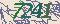
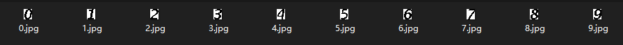
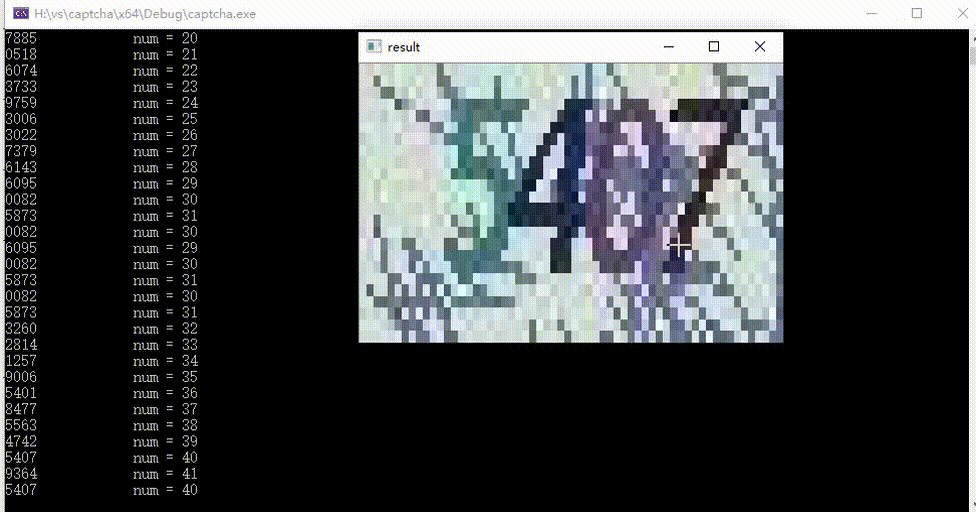

吉林大学教务系统验证码识别方案¶
verification code classification
前言¶
每次登录吉林大学教务系统时，谷歌浏览器可以保存账号密码不用再次输入，可是验证码却每次都要输入一次，很麻烦，这我某个大佬学长网站的需求，我正好当时也在做视觉,就想着能不能做一个出来，然后他把数据集发给我，我开始了尝试
图像分析¶
 

首先观察图像特征：
- 每个数字的高度都是一样的，且无形变。(很重要！！)
- 每个数字颜色都一样
- 背景噪声无序，放大观察后严重干扰数字的整体性
思路¶
踩坑思路¶
借鉴之前学习opencv时的车牌识别思路：即将图像进行二值化->进行腐蚀，直到四个数字合并到一个连通域中，然后在原图等间隔分割出来，进行滤波去噪，最后遍历模板匹配得到数字
缺点
数字仅仅高度相同，宽度却不相同，分割后的数字还会有很多噪声会导致模板匹配正确率下降，这里可能采取机器学习会更好，但是最麻烦的是标注，学长给我的数据集都是没有标注过的,所以我干脆放弃了这个方案
最终方案¶
既然标注不现实，我也就放弃了深度学习这个方案，这时候我发现了这些数字的字形是不变的！！也就是说我不需要电脑自己去学习这个模型，我可以自己把这个数字的模板构建出来，之后遍历进行匹配就可以的，我看
使用opencv自带的鼠标回调可以很方便的构建模板，接下来就是绘画环节
void mark()//抠图，左键变白右键变黑
{
void onMouseCallBack(int event, int x, int y, int flags, void* pUserData);
while(1)
{
namedWindow(windowName, WINDOW_NORMAL);
imshow(windowName, src);
cv::setMouseCallback(windowName, onMouseCallBack, reinterpret_cast<void*> (&src));
char q = waitKey(0);
if (q == 27)
{
cv::destroyWindow(windowName);
imwrite("H:\\深度学习源码学习\\moban\\8.jpg", src);//保存抠图完成的模板
}
if (q == 'q')
{
cv::destroyWindow(windowName);//不保存退出
break;
}
}
}
void onMouseCallBack(int event, int x, int y, int flags, void* pUserData)//鼠标事件回调
{
//创建保存像素值的3字节容器
cv::Vec3b pixel;
//空指针强制类型装换成图片指针pMat
cv::Mat* pMat = reinterpret_cast<cv::Mat*>(pUserData);
//鼠标左键按下时，返回坐标和RGB值，将其变白
if (event == CV_EVENT_LBUTTONDOWN )
{
if (src.channels() == 1)
{
int pixel1;
//获取像素值
pixel1 = pMat->at<uchar>(y, x);//y是row，x是col
//输出像素值的（R，G，B）
//cv重载了<<运算符，可以输出Vec3b类型，但是按B,G,R输出
cout << "at(" << x << "," << y << ")-->pixel(1)=" << pixel1 << endl;
src.at<uchar>(y, x) = 255;
}
}
//鼠标右键按下时，返回坐标和RGB值，将其变黑
if (event == CV_EVENT_RBUTTONDOWN)
{
if (src.channels() == 1)
{
int pixel1;
//获取像素值
pixel1 = pMat->at<uchar>(y, x);//y是row，x是col
//输出像素值的（R，G，B）
//cv重载了<<运算符，可以输出Vec3b类型，但是按B,G,R输出
cout << "at(" << x << "," << y << ")-->pixel(1)=" << pixel1 << endl;
src.at<uchar>(y, x) = 0;
}
}
}
抠图结束后得到9个模板 
之后就是debug环节
过程中我发现了数字的高度是一样的，而且在图像中的高度位置也是固定的，而且每个数字也有10像素左右的宽度，所以我缩小了循环范围，只在相同高度进行遍历，且识别到一个数字之后跳跃8个像素识别下一个数字
匹配思路为：
- 将图像进行灰度处理，由于每个数字颜色都是一样的，所以在灰度图像中灰度级是连续的
- 遍历套用模板，求在模板的位置像素的方差与极差，并以其作为阈值进行筛选，极差低于阈值就判定为该模板所代表的数字，极差高于阈值则继续遍历
进过20张图左右的debug，对模板模板进行了一些改动
以下为新的9个模板

之后就是验证环节，对数据集一一验证，如果遇到问题就拿图进行debug，基本没什么大问题
值得注意的是 3 和 8 字形有一半是相同的，因为我的遍历顺序是1-2-3-4-5-6-7-8-9-0，所以如果先拿3的模板去匹配8这个数字的话，很容易会误识别，我将模板的遍历顺序反转，以及就是先进行8的识别，如果匹配就认为该数字是8，不匹配的话再进行3的匹配
最终大功告成，数据集进行了2000张验证都没有误识别或错识别的情况，我将源代码发给学长，学长整合了网站上获得了很丝滑的效果！！
最终效果¶
